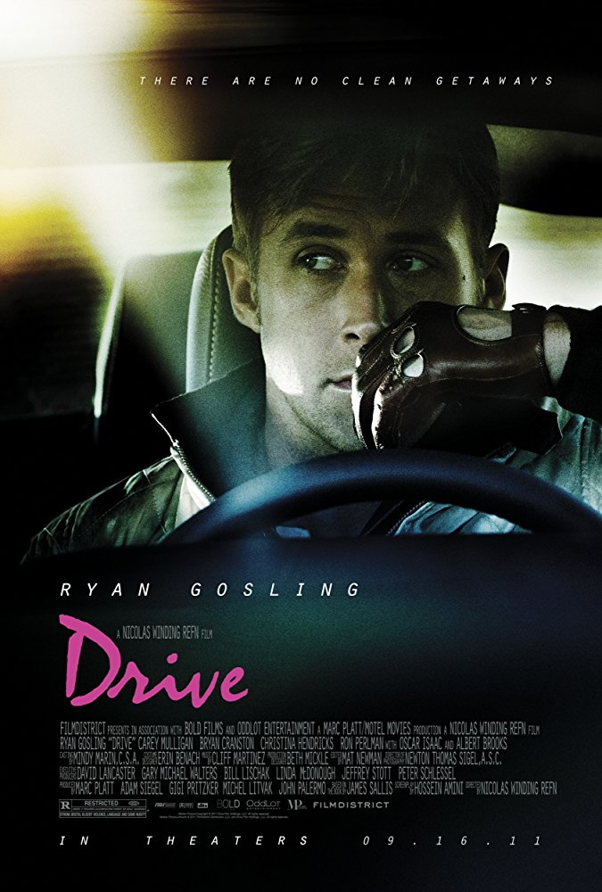
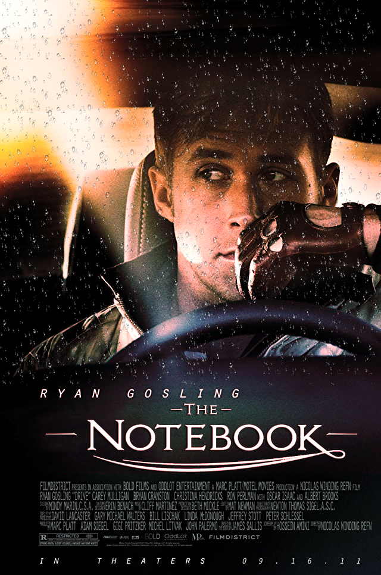
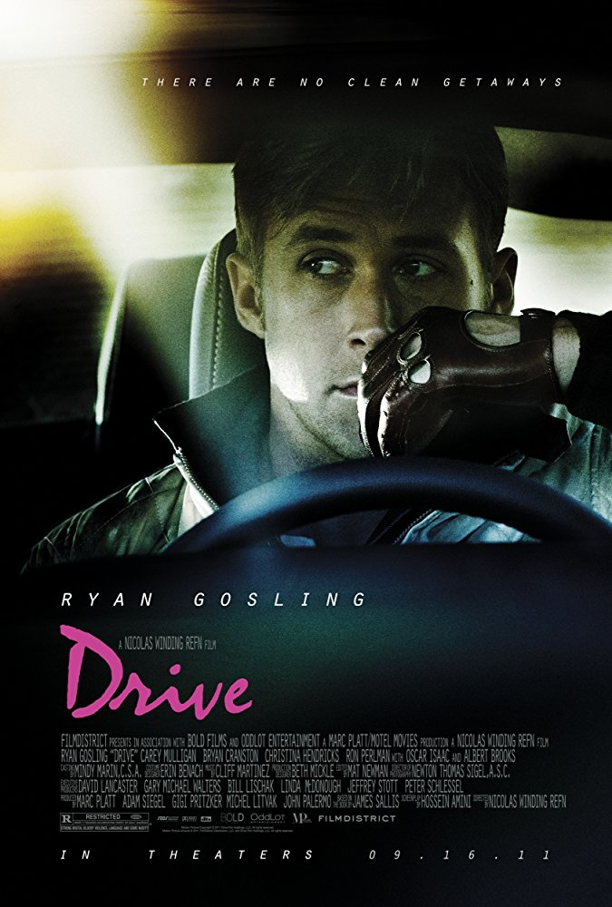
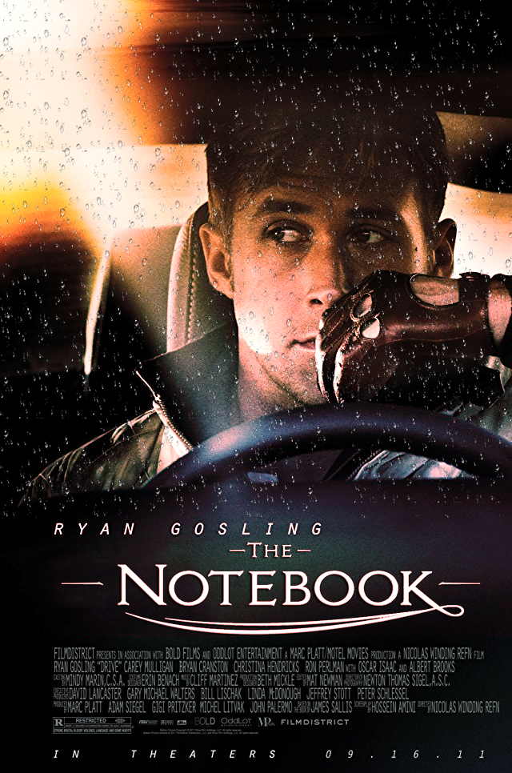
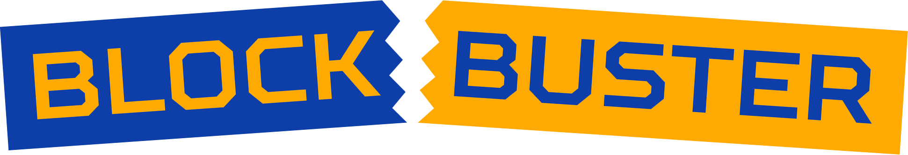
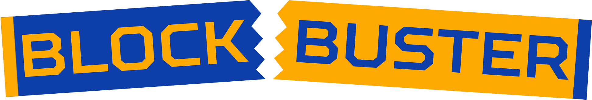
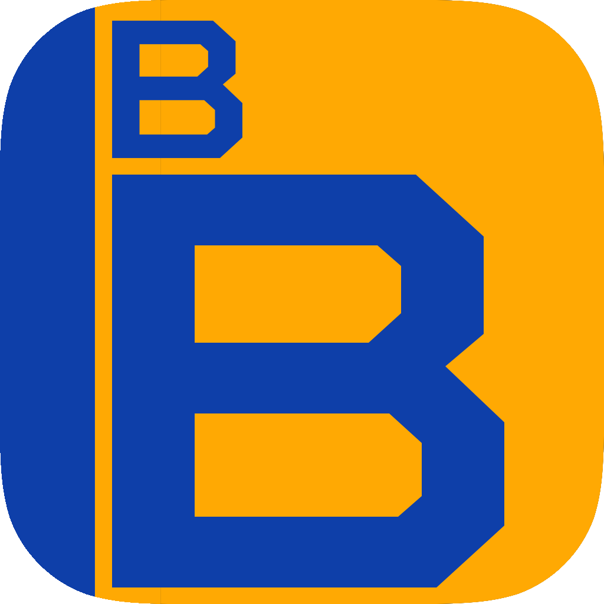

Soundscape: Space Attack
An example of how you made a choice related to genre or audience
Note: You can read more about this revision on the Work-in-Progress 2 reflection page.
For this revision, I took the soundscape I made in class and expanded it into a 4-minute sound story, detailing a spaceship that takes off, fights a monster, and then gets trapped in space. When thinking about genre for this revision, I realized that I had to come up with a genre, since my first attempt did not have one at all.
Whereas my first soundscape was merely an atmosphere piece, with a loose monster attack plot, this revised soundscape attempts to convey a whole narrative. I decided that the genre of the soundscape would be similar to that of an action movie, and the sounds that I chose for it were selected with that in mind.
If I had to choose another genre for this soundscape, I would likely choose comedy, simply because I feel that it would be the easiest genre to convey over sound. Wacky sound effects, jarring juxtaposition, and timing would all contribute to making the same premise funny instead of serious.
Original Soundscape
Revised Soundscape
Web Design
An example of how you made a choice related to color, fonts, captions, scale, or other aspects of the visual mode
Note: You can also read more about this revision on the Work-in-Progress 2 reflection page.
For this revision, I edited my website's CSS file to include more color and tweak the menu bars at the top of every page. Notably, the sub-section menus like that on this page now include the main section page on them. Before, a user had to click on the main menu section button to view a main page, which could be confusing to a user because its existence is not otherwise indicated.
I also updated the table CSS during the skills assignment to be easier to read. Because the tables were so large, I added a hover CSS change to modify the color scheme of a highlighted row. This allows users to follow along with the logs if they choose to read them.
If the tables were not as large, I would likely use other methods of highlighting, since users could find it obnoxious to have to hover over small rows on multiple tables. Perhaps then techniques such as larger padding would work, as with small tables there is little need to compact space.
Colored Tables
| Header 1 | Header 2 | Header 3 |
|---|---|---|
| Row 1, Column 1 | Row 1, Column 2 | Row 1, Column 3 |
| Row 2, Column 1 | Row 2, Column 2 | Row 2, Column 2 |
Photoshop: Movie Poster
An example of how you made a choice related to comparing one thing to another
For this revision, I chose to edit a movie poster, similar to the one we worked on in class as a team. I felt as though our first attempt was already ruined enough, so I took another movie poster and decided to Photoshop it to fit the tone of The Notebook, which was the basis for The Boo.
I took a poster for the movie Drive, also starring Ryan Gosling, and made adjustments to try and see if I could make a picture of Gosling wearing driving gloves seem like it belonged in The Notebook. The first change was altering the color scheme, taking away the blues and emphasizing the reds. I then added a rain effect, hoping to match the tone of the Notebook poster.
I don't know if I quite was able to match the tone of The Notebook, but I think I at least succeeded in removing it from its action movie context. I think more content would have to be added to make it seem plausible as The Notebook, but that is unfortunately beyond the scope of my abilities.
Old Vs. New Movie Poster
 



Photoshop: Logo Design
An example of something that frustrated you or took a larger amount of time than you would have liked
For this revision, I attempted to transform my Blockbuster logo into a mobile app icon. Making this logo was frustrating because I was unable to easily cut portions of the shapes to fit together or make a convincing rip effect in Photoshop the way I might be able to in Illustrator. I chose to brute force through it anyway, manually cutting out shapes and placing colored blocks over top of each other. This was particularly annoying when adding the colored stripes at the end of each "ticket" in the logo
The colored stripes were important, though, to make the mobile app. While I initially thought the blue "B" looked nice on the yellow background (because the font used here makes the "B" kind of look like two stacked movie tickets), I felt it was a bit plain. I added the stripe along the side along with the second B, adding some flair to the mobile logo. After adding the stripe in the mobile logo, I thought that it might make the original look more like a ticket, which I thought was a neat way to bridge the two together.
Old, New, and Mobile Logos
  Sound Design: Synthesizers
An example of something you are particularly proud of
Note: You can read more about this revision on the Skills assignment Update 3 page.
For this revision, I took what I learned during my skills assignment to create another hip-hop beat, attempting to further explore modulation techniques. The interesting thing about this beat is that there are three synthesizers stacked on each other during most of the song. The bass, the primary melody, and the secondary melody are all based on Massive synthesizers with different frequencies so as not to clash together as much as the synthesizers in the first beat.
This beat sticks out in my mind simply because of the amount of variation I tried to put into it. I tried to pick sounds that would complement and contrast with the synthesizers, such as the wood block and the shakers. I was also satisfied with the modulation techniques I used in the second section of the beat. While the synth notes are all drawn out, I used the modulation tools in Massive to shift the tone, creating a trailing effect as each note transitions into the next.